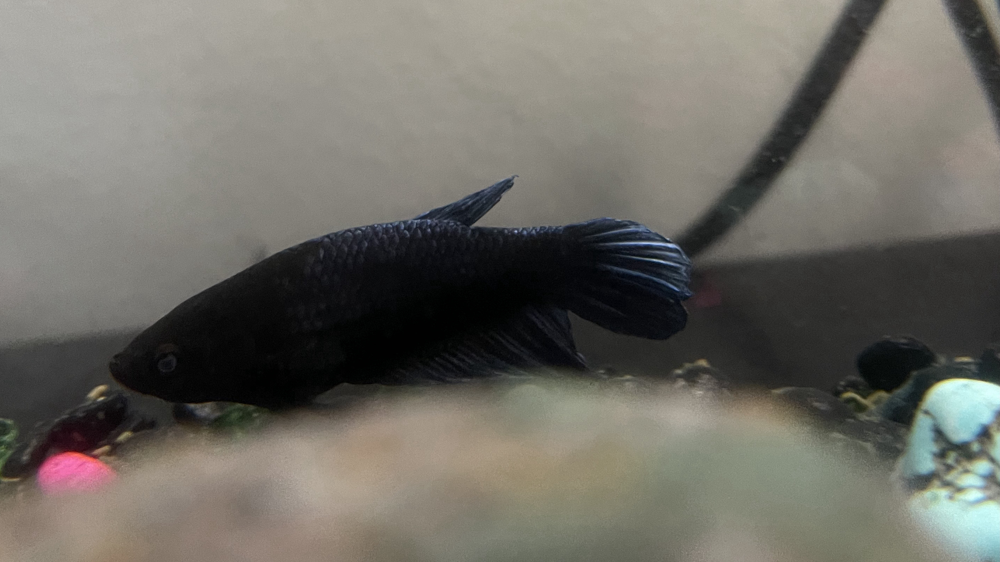
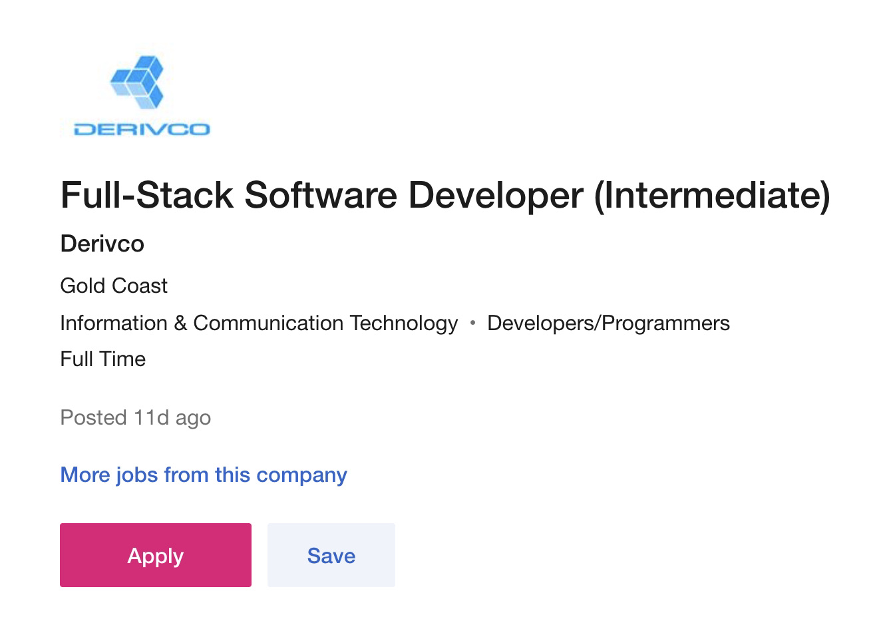
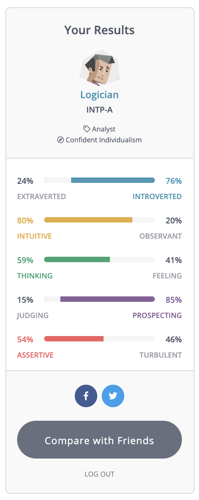
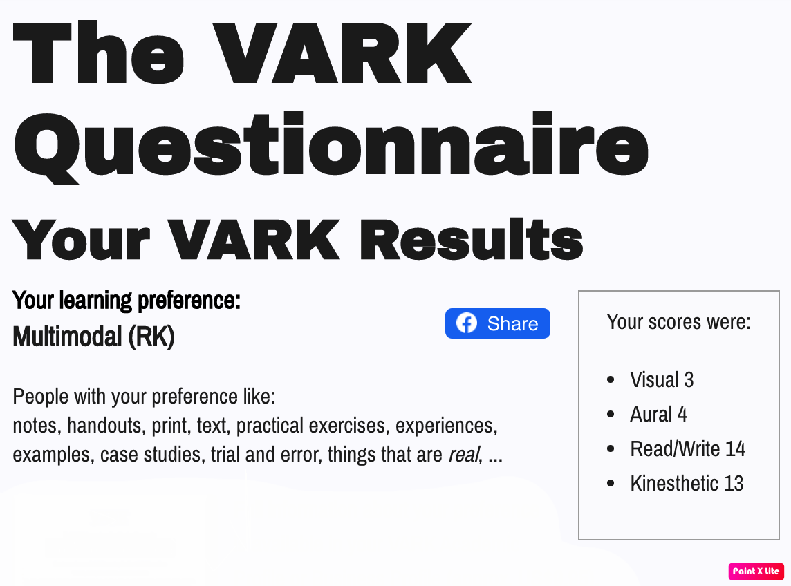
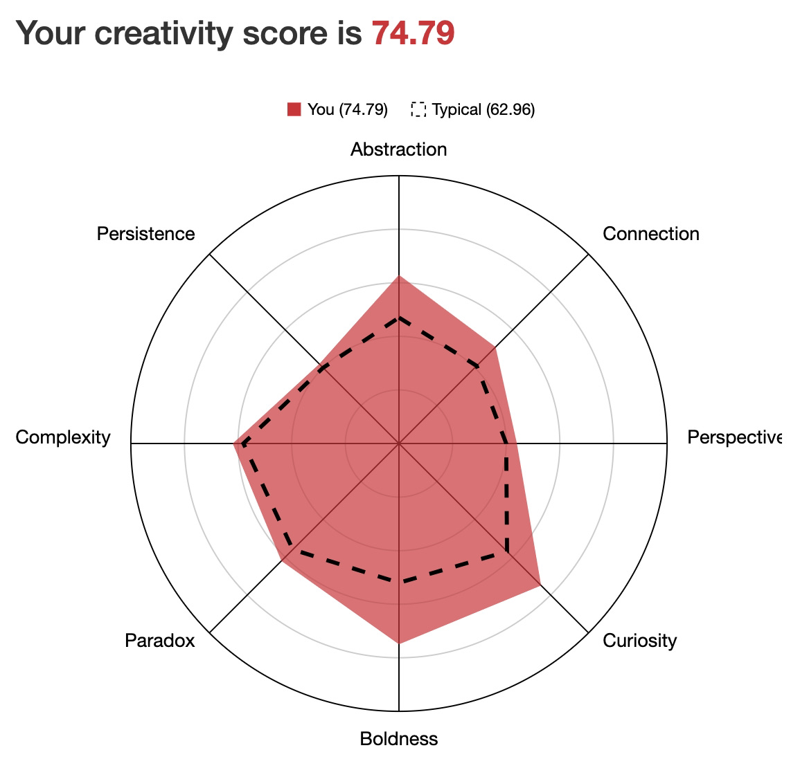

About Me
Born and raised on the north coast of NSW I’ve always had a passion for anything IT. Being surrounded by technology in all aspects of my childhood and life today, IT is an inescapable and integral piece of our society as a whole. From an Australian/Maori background, technology has been a major factor in staying connected with family, friends and culture across the world, and is the main reason I want to study IT. I haven’t had any further education past Year 12, however I hope this course can allow me to pursue a degree and eventually a career in IT.
As for a (not-so)interesting fact, I have a pet fish named Tails.
Interest in IT
Playing video games as a kid and figuring out the different things I could do with a computer is what sparked my interest in IT, but learning simple C++ and python is what made me realise I want a career in IT. With the ability to do anything you can think of at your fingertips, and with new technology developing everyday, I believe the possibilities of the industry are endless and I’m excited to see what’s to come in the future.
I don’t have much experience working in IT, besides learning a bit of C++ and Python in my spare time, and I’m keen to see where this course takes me.
I chose to come to RMIT because of the flexible and self-paced online learning structure, as well as the good reputation and friendly staff.
As I’m just studying this course through OUA, I’m hoping it can open the door to studying a degree in IT, while also teaching me the foundations and core skills to pursue a career.
Ideal Job
This role involves full stack development using client-side technology, C#, multiple frameworks and tools. It includes analysis, design and production of high quality software for an online gambling platform. With offices located internationally the opportunity to travel, as well as the actual job, this job is very appealing.
A minimum of 2-5 years software development, a minimum 3 year relevant qualification or a relevant 1 year certification and at lease 2 years software development experience is required before applying. Experience in clients such as Polymer/Lit, JavaScript, HTML and tools such as Git, Azure Dev Ops and SonarQube is also preferred and highly regarded.
Although my skills and qualifications don’t match the job description at this point in time, other than basic HTML, I’m hopeful by the end of my degree I’ll have the skills and certifications to pursue this job. Through practice and implementation of the aforementioned clients and tools throughout my study at RMIT, both in personal projects and class assignments, I believe this is possible.
Personal Profile
On analysis of the Myers-Briggs personality, Vark learning style and AULIVE creativity tests, the results were surprisingly accurate.
With the Myers-Briggs test determining a Logician INTP-A type personality, I feel it has accurately described my personality style. INTP-A, standing for Introverted, Intuitive, Thinking, Prospecting and Assertive, means my strong suit isn’t working with teams, however I enjoy thinking outside of the box and feel I can bring genuine, interesting ideas to the table. Even though I prefer to work alone, I am extremely excited to work amongst a team and hear everyones ideas.
The Vark learning style questionnaire honestly surprised me. Expecting my results to lean towards Visual and Aural, I was surprised when I saw it was mostly weighted towards written and kinesthetic learning. Though it was a bit of a shock, it has really opened up my eyes to the way I actually digest information and will definitely change my approach to learning in the future.
Finally, the creativity test was the one I was most interested to see. I really had no idea there was a way to actually measure creativity and was confused on how it would be conveyed but I feel it has given a decent explanation and reading of the associated attributes. With curiosity and abstraction outweighing attributes like persistence and perspective this means I prefer to improve and reimagine pre-existing or widely conceived ideas rather than creating something completely new.
Although the results don’t depict me in a way that enjoys working in teams, I really believe collaboration is the best way to learn as it opens you up to new ideas and perspectives. In regard to the creativity test, the higher abstraction and curiosity scores may enable me to examine and abstract concepts from others ideas, rather than clashing with them. Taking the results into account I feel as though a team that can actively collaborate and also work alone at times would be my best fit.
Project Idea: AI/ML Car Problem Diagnostic App
The project will be a smartphone application that diagnoses mechanical issues in automotive vehicles. The app will use an AI/ML database created by its users, allowing the app to get better and smarter through users’ questions and solutions.
Beginning with simple text-based questions and answers, to possible audio detection software to diagnose problems from sounds coming from the car. The AI/ML program will provide more detailed and varied solutions as more questions are asked by users and will feature a maintenance schedule based on the use of your car and the app.
Learn More